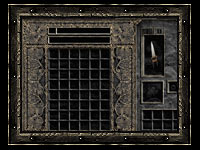

Your character can carry 10,000 gold per level. For example, a 10th-level character can carry
up to 100,000 gold. A level 99 character can carry 990,000 gold. The maximum amount of gold a character can carry
with stash is 3,490,000, at level 99. Gold does not share space with items or weapons in your backpack as it did in Diablo.
If you are killed, your character will lose a percentage of the total gold both carried and stored in the Stash. This
percentage is equal to your character's level but will not exceed 20%. After this 'death penalty' is deducted, the
remaining gold your character was carrying falls to the ground in a pile. If the penalty exceeds the amount of gold you
were carrying, the remainder of the penalty is deducted from your Stash.
In Single-Player, dying will not deplete your entire gold supply. No gold is lost from your Stash, and 500 gold per character
level is exempt from the death penalty. For example, if a 10th level Single-Player character with 5,000 gold dies,
he will lose no gold.
The items in your Stash are saved during the game and when you exit the game. You only have to worry about losing
items in your Stash when you die in Hardcore Mode. You can learn more about Hardcore Mode here.

Stash Gold Capacity
There's a limit of 2,500,000 gold that can be stored in your stash.
Stash carries across acts and difficulty levels
Items in your Stash carry across Acts. The same items and amount of gold will remain in your Stash,
regardless of the Act or difficulty level.
Scrolls
There are only two types of scrolls -- Scrolls of Town Portal and Scrolls of Identify. Both types are extremely useful
during your character's travels and can be used by right-clicking on the scroll. If you cannot find enough scrolls,
vendors in town sell them.


|
A Scroll of Town Portal opens a magical blue gateway from the wilderness to the nearest town. The Town Portal remains
active until your character enters it from town and returns to the place where it was originally cast. Casting
a new Town Portal will close any other portals previously created by that character.
Scrolls of Identify are used on unidentified magically enchanted items, helping you decide whether to equip or sell
them. When you use an Identify scroll, your cursor will change into a question mark. Move the cursor over an unidentified
item and left-click to make the magical properties of the item appear in its description. Magic items cannot be used
until they have been identified.
|
Town Portal
 Using a Scroll of Town Portal opens up a portal near your character. This portal is a gateway to the nearest safe
stronghold, town, or city. A portal remains active until your character re-enters it and returns to the place from
which the portal was originally activated. Newly created portals will cancel out any portals previously cast by your character.
Using a Scroll of Town Portal opens up a portal near your character. This portal is a gateway to the nearest safe
stronghold, town, or city. A portal remains active until your character re-enters it and returns to the place from
which the portal was originally activated. Newly created portals will cancel out any portals previously cast by your character.
The destination of the Town Portal is listed above it, as is the name of the character who opened the Town Portal.
Town Portal use is restricted to party members only.
Other players must join your party to use your Town Portal. Similarly, you
must join a party before you can use other players' Town Portals.
If you go hostile with another player your Town Portal will close. You also will not be able to use the Town Portals of
other players or Town Portals created by a Portal Shrine.
When fighting powerful bosses, Unique monsters, or huge groups of monsters, your character may wind up dying a lot. Have
two party members cast Town Portal a few screens apart. If monsters begin to camp around or guard one Town Portal,
you can enter using the other one. Party members can continue to use these portals without recasting, as long as the
original Town Portal casters do not use their own portal when returning from town or create any new Town Portals. This
method is very handy when you are low on Health Potions and need to return to town frequently to heal, refill Mana
or buy more Healing Potions.
Remember to make sure that everyone in your party has used your Town Portal to return to battle before entering it
yourself. Otherwise, you might close your Town Portal leaving someone in town. You do not want to have to use
another Town Portal scroll to reunite your party.
When going through large areas between Waypoints, It is a good idea to open up a Town Portal as a quick escape route. You
can use it to retreat from danger or to get back to your body much more quickly if you die.
Town Portals are also your best escape from other players who are trying to kill you. If a player turns Hostile on you,
quickly use a Town Portal to escape to the safety of town if you want to avoid player-to-player combat.
Town Portal Restrictions
You cannot enter Town Portals cast by other players in areas
beyond the "blocking quests" without having completed those quests:
e.g., Canyon of the Magi/Seven Tombs/Duriel's Lair (The Summoner), The
Harem/Palace Basement/Arcane Sanctuary (The Tainted Sun), Durance of
Hate (The Blackened Temple), The Worldstone Keep (The Ancients), The
Secret Cow Level (Terror's End in DII classic or Eve of Destruction in
DII: LoD). NOTE: A player who kills the High Council (but doesn't use
Khalim's Will to smash the Compelling Orb) may take a Town Portal into
the Durance of Hate.
This is to prevent higher level players from helping lower level players to advance further in the game
without working for it. If a player is unable to enter a portal, this means they need to complete a quest.
Identify
Identify scrolls are extremely important, as they enable your character to ascertain the properties of magically enchanted
items, allowing him to equip and use those items. Right-click on an Identify scroll to activate it. The mouse cursor
will change into a question mark. Move the cursor over the item in your inventory that you wish to identify and left
click. The item's properties will now appear in its description.
Items that say Unidentified must be identified before you can equip them or see their stats.
Tomes (Books)
 |
Designed to hold volumes of similar spells, each tome can store up to 20 scrolls of the same type. Vendors who sell scrolls
generally sell tomes as well. Right-click on a tome to cast one of the scrolls stored within it. When a tome is empty, it
remains in inventory until it is replenished with more scrolls, sold, dropped, or traded.
Add scrolls to a tome in your inventory or Stash by dropping the scroll directly onto the tome. Dropping one tome onto
another consolidates both into a single tome.
|
Tome of
Town Portal
|
 |
Tome of
Identify
|
You may also hotkey the use of a tome, so that, for example, when you click on your pre-selected hotkey, a single
scroll from your tome will be used to cast Town Portal.
Fill Tome: By pressing the shift key while right-clicking on a scroll you want to buy, you automatically purchase enough
scrolls to fill the first unfilled tome of that scroll type in your inventory.
Waypoints
 The world of Sanctuary is huge, and often, great distances separate towns from their outlying regions. During the Sin
War, the Horadrim devised a system of magic Waypoints to provide instant transport from one place to another. The
magics at work have long since been forgotten, as the Horadric Magi have all but disappeared. However, these Waypoints
remain as a legacy to the Horadrim's once-great power, and the value of these devices cannot be denied.
The world of Sanctuary is huge, and often, great distances separate towns from their outlying regions. During the Sin
War, the Horadrim devised a system of magic Waypoints to provide instant transport from one place to another. The
magics at work have long since been forgotten, as the Horadric Magi have all but disappeared. However, these Waypoints
remain as a legacy to the Horadrim's once-great power, and the value of these devices cannot be denied.
Within every town, and at various places throughout each Act there are Waypoints. Click on them to bring up the
Waypoint Menu, displaying a list of destinations.
Waypoint Menu
This menu shows all possible locations to which you can travel. Be sure to click on Waypoints as you find them to add
their location to your Waypoint Menu. The Waypoint destinations in gray text are ones you have not yet discovered and
activated. You can jump to any Waypoint shown in blue text by clicking on its button in the Waypoint Menu. You may
also access Waypoints from other Acts by using the Act Tab in this menu. Since Waypoints are saved with your character
between games, they are a quick way to bypass areas you have already explored.
The most important thing to remember about Waypoints is to always activate new ones when you see them. Once you have
clicked on a Waypoint, you will be able to move to that Waypoint from any other Waypoint.
Waypoints do not always look the same: The Horadrim Magi were wily, making some of the Waypoints difficult to recognize.
Many of the Waypoints blend into their surroundings. Check your Automap often, as Waypoints are easy to spot on your Automap.
Party members do not share Waypoints with each other; however, players can help transport other players to a Waypoint's
location by opening a Town Portal. Players who haven't activated that Waypoint
location can now use this Town Portal to reach the undiscovered Waypoint. Once there, they can activate the Waypoint
and add it to their own Waypoint lists.
When you use a Waypoint to switch between Acts, it is best to go first to the main town of the Act to which you are
traveling. This way, you can safely load the Act in town, where you cannot be attacked. From there, you can use
the Waypoint to go to other Waypoints in the Act.
The Belt
Belts play an important role in your character's survival. Designed to provide quick access to items, most belts contain
multiple slots, loops, and cords from which to suspend potions and other vital items. The larger a belt then the more
potions and scrolls it can store. Wearing a sash or larger belt expands the initial four-slot capacity of your character's
belt by adding one or more extra rows of four slots. While only four slots are normally displayed on the Interface Bar,
you can access the additional slots by highlighting any of the visible belt slots or by pressing the tilde ("~") key to
toggle the belt open and closed.
You can drink a potion from your belt by right-clicking on the potion. Also, each occupied belt slot has a number,
from 1-4. Pressing one of these hot keys is a fast way to drink a potion without having to click on it.
Larger belts have other advantages. When you drink a potion or read a scroll, the item above it drops down to replace
the consumed item. If you have a potion or scroll in a hot key slot and you pick up another of the same type, the
new item automatically stacks above the first one. This continues until the column is full. If there is no more room on
the belt, the item is placed in your backpack.
Health, Mana, and Rejuvenation potions are automatically placed in the belt when picked up. You can also place
scrolls of Identify and Town Portal, as well as the other drinkable potions, in your belt. However, items like
scrolls are not automatically placed in your belt unless there is a matching item in one
of your four hot key slots and there is an empty slot above the one with the matching item.
Holding down SHIFT and RIGHT-Clicking, when buying Health Potions, auto-fills any empty slots in the belt. This also
applies to buying scrolls of Town Portal and Identify.
Holding down SHIFT and LEFT-Clicking on Health, Mana and Rejuvenation potions in inventory, will auto-move them to the appropriate column
in your belt.
Holding down SHIFT and a Hot Key (1-4) or Right-Clicking on Health, Mana and Rejuvenation potions in the Belt,
will give the Potion to the player's Hireling if the player has one.
Dungeon Randomization
Although many dungeons and areas have random layouts, some areas will always be the same.
Here are some (not all) of the areas with the same layout:
Caves 2 (Cold Plains)
Forgotten Tower Level V (actually 2 variations)
Inner Cloister
Cathedral
Tristram
Catacombs Level 4
Some levels of the Palace
Duriel's lair
Sewer Level II (Kurast)
Kurast Causeway
Travincal
Durance of Hate level 3
The Chaos Sanctuary (last part)
Nihlathak's Temple
Arreat Summit
Throne of Destruction
The World Stone Chamber
Online Privacy Policy
Battle.net Terms of Use Agreement
©2019 Blizzard Entertainment. All rights reserved.
 Gold has long served as the sole reliable currency in the world of Sanctuary. This precious metal is melted into small
gold slugs, which are then pressed and stamped with the heraldry of the kingdom that created them. Each coin throughout
the realms possesses the same value, regardless of the coin's shape or size.
Gold has long served as the sole reliable currency in the world of Sanctuary. This precious metal is melted into small
gold slugs, which are then pressed and stamped with the heraldry of the kingdom that created them. Each coin throughout
the realms possesses the same value, regardless of the coin's shape or size.
 Near your starting location in each of the five Acts, you will find a large chest -- your private Stash. It is a secure,
permanent, SAFE place to store any precious items and gold you find in your adventures. Use your Stash to hold any items
you intend to keep but do not want occupying space in your Inventory. Items left on the ground will disappear
after a few minutes.
Near your starting location in each of the five Acts, you will find a large chest -- your private Stash. It is a secure,
permanent, SAFE place to store any precious items and gold you find in your adventures. Use your Stash to hold any items
you intend to keep but do not want occupying space in your Inventory. Items left on the ground will disappear
after a few minutes.